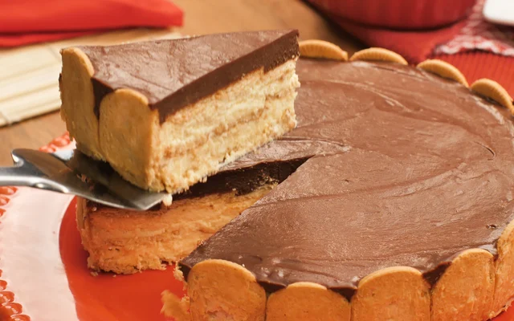

A torta alemã fácil, simples e deliciosa é uma sobremesa clássica, com camadas irresistíveis que a tornam uma opção perfeita para momentos especiais. Com ingredientes simples, como manteiga, açúcar, creme de leite, bolacha maisena, leite e leite condensado sabor chocolate, é possível preparar essa delícia em pouco tempo. O processo de como fazer torta alemã é simples: o creme fofo de manteiga e açúcar misturado ao creme de leite é intercalado com camadas de bolacha maisena molhadas no leite, sem esquecer também dos biscoitos alinhados na lateral para ter aquele visual característico da receita de torta alemã. Na finalização entra o leite condensado sabor chocolate, que também pode ser feito em casa misturando os ingredientes ou substituído por outro tipo de cobertura de chocolate. Depois de gelar até firmar, você terá uma torta alemã fácil, simples e deliciosa, com textura suave e um sabor incrível, perfeita para saborear a qualquer momento.
Home